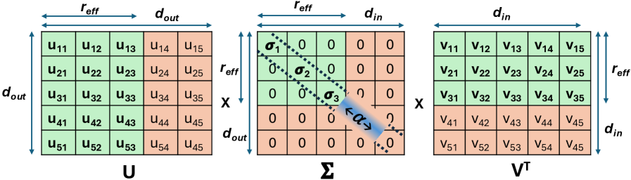

Why it matters왜 중요한가
For long-context LLMs the bottleneck is no longer the weights — it is the KV cache. On LLaMA-3.1-8B at 128K tokens (batch 4) the KV cache is 81% of 85 GB of FP16 memory.
긴 컨텍스트 LLM에서 병목은 더 이상 가중치가 아니라 KV 캐시다. LLaMA-3.1-8B의 128K 토큰(배치 4)에서 KV 캐시가 FP16 메모리 85 GB의 81%를 차지한다.
Low-rank decomposition compresses the channel dimension of keys and values by projecting them into a smaller latent space — and unlike token eviction it discards no tokens. But prior low-rank methods (Palu, ReCalKV) pick ranks with fixed budgets or heuristics like Fisher scores, so they stall at 30–50% compression before accuracy collapses, and they pay reconstruction latency at inference. STAR-KV's bet is that the rank itself should be learned: different heads and blocks tolerate compression very differently, and a model can discover that profile from a tiny calibration set. Making rank a learnable, differentiable quantity is what unlocks aggressive 75% compression while staying near-lossless — and the paper ships Triton kernels so the savings are real, not just on paper.
저랭크 분해는 키·밸류를 작은 잠재 공간으로 투영해 채널 차원을 압축한다 — 토큰 제거와 달리 어떤 토큰도 버리지 않는다. 그러나 기존 저랭크 기법(Palu, ReCalKV)은 고정 예산이나 Fisher 점수 같은 휴리스틱으로 랭크를 정해, 정확도가 무너지기 전 30–50% 압축에서 멈추고 추론 시 복원 지연을 치른다. STAR-KV의 베팅은 랭크 자체를 학습해야 한다는 것이다: 헤드와 블록마다 압축 내성이 크게 다르며, 작은 캘리브레이션 셋으로 그 프로파일을 발견할 수 있다. 랭크를 학습 가능한 미분량으로 만드는 것이 75%의 공격적 압축을 거의 무손실로 가능케 하며, 논문은 Triton 커널까지 제공해 절감이 실제로 구현되게 한다.

By the numbers핵심 숫자
Overall compression vs accuracy전체 압축률 vs 정확도
| Method | Avg KV bits | Overall compression | Zero-shot acc (%) |
|---|---|---|---|
| KIVI | 3.16-bit | 5.1× | 60.30 |
| KVQuant | 2.33-bit | 6.9× | 58.00 |
| Palu + 4-bit | 4-bit | 8.0× | 56.71 |
| STAR-KV (75% + quant) | 3.2-bit | 20× | 59.18 |
The idea in three moves세 가지 핵심 아이디어
Soft-threshold rank control소프트 임계값 랭크 제어
A hard "keep top-k singular values" cut is non-differentiable, so you can't learn it. STAR-KV replaces it with a soft threshold T(σ;α)=σ·tanh(s(σ−α)) that smoothly zeroes small singular values while staying differentiable. A separate threshold α is learned per head for keys and per block for values, trained with a KD loss (match the uncompressed model's output distribution) plus an exponentially decaying compression loss Σe⁻ᵅ that pushes ranks down early, then relaxes so the model can recover quality.
"상위 k개 특이값만 유지" 같은 하드 절단은 미분 불가능해 학습할 수 없다. STAR-KV는 이를 소프트 임계값 T(σ;α)=σ·tanh(s(σ−α))로 바꿔 작은 특이값을 부드럽게 0으로 보내면서 미분 가능하게 만든다. 임계값 α는 키는 헤드별, 밸류는 블록별로 따로 학습하며, KD 손실(압축 안 한 모델의 출력 분포와 일치)과 지수 감쇠 압축 손실 Σe⁻ᵅ를 함께 쓴다 — 초반엔 랭크를 강하게 누르고 점차 완화해 품질을 회복시킨다.
Hybrid K/V decomposition하이브리드 K/V 분해
Reconstructing the latent KV at inference costs FLOPs. Joint decomposition (all heads together) is more accurate but ~h× more expensive than head-wise. STAR-KV's analysis shows values are more error-sensitive and keys are not, so it uses joint decomposition for values — fusing the value reconstruction matrix into the output projection (weight absorption) to erase the overhead — and head-wise decomposition for keys, which is cheap to begin with. Accuracy where it matters, low latency everywhere.
추론 시 잠재 KV 복원은 FLOPs를 쓴다. 결합 분해(모든 헤드 합침)는 더 정확하지만 헤드별보다 ~h배 비싸다. 분석 결과 밸류는 오차에 민감하고 키는 둔감하므로, STAR-KV는 밸류엔 결합 분해를 쓰되 밸류 복원 행렬을 출력 투영에 흡수(weight absorption)해 오버헤드를 없애고, 키엔 헤드별 분해를 써 애초에 저렴하게 둔다. 필요한 곳엔 정확도, 어디서든 낮은 지연.
Outlier-aware Hadamard quant이상치 인지 Hadamard 양자화
After low-rank projection the latent channels are scaled by singular values — a few become high-magnitude outliers that wreck uniform quantization. STAR-KV splits the latent dimension into an outlier block (top ~20%) and an inlier block, applies an independent Hadamard rotation to each to smooth magnitudes, then quantizes mixed-precision (4-bit outliers, 3-bit inliers). The Hadamard factors are fused into the up/down projections, so it adds zero runtime overhead — and pushes overall compression to 20×.
저랭크 투영 뒤 잠재 채널은 특이값으로 스케일되어 일부가 큰 이상치가 되고, 이는 균일 양자화를 망가뜨린다. STAR-KV는 잠재 차원을 이상치 블록(상위 ~20%)과 정상 블록으로 나눠 각각 독립 Hadamard 회전으로 크기를 평탄화한 뒤 혼합정밀(이상치 4-bit, 정상 3-bit)로 양자화한다. Hadamard 인자는 up/down 투영에 흡수되어 런타임 오버헤드 0이며, 전체 압축률을 20×까지 끌어올린다.
How it works어떻게 작동하나
- Decompose offline. 오프라인 분해. SVD-factor every key/value projection W = UΣVᵀ — no runtime change yet.모든 키/밸류 투영을 W = UΣVᵀ로 SVD 분해한다 — 아직 런타임 변화는 없다.
- Learn the thresholds. 임계값 학습. On a 3,000-sample calibration set (<6 GPU-h), train per-head/per-block α with the soft-threshold operator under KD + compression loss.3,000개 캘리브레이션 셋(<6 GPU시간)에서 KD + 압축 손실로 헤드별/블록별 α를 소프트 임계값과 함께 학습한다.
- Hard-truncate & absorb. 하드 절단 & 흡수. Apply a hard threshold offline to fix each head/block rank; absorb value reconstruction into the output projection and Hadamard factors into the up/down projections.오프라인에서 하드 임계값을 적용해 헤드/블록 랭크를 확정하고, 밸류 복원은 출력 투영에, Hadamard 인자는 up/down 투영에 흡수한다.
- Quantize the latent. 잠재 양자화. Split latent dims into outlier/inlier, Hadamard-rotate each, quantize 4-bit/3-bit mixed precision.잠재 차원을 이상치/정상으로 나눠 각각 Hadamard 회전 후 4-bit/3-bit 혼합정밀로 양자화한다.
- Serve with fused kernels. 융합 커널로 서빙. Triton kernels fuse RoPE + dequant + reconstruction into the attention matmuls and stack head-wise probabilities into a single GEMM for throughput.Triton 커널이 RoPE + 역양자화 + 복원을 어텐션 행렬곱에 융합하고, 헤드별 확률을 단일 GEMM으로 묶어 처리량을 높인다.
What to take away그래서, 가져갈 것
Making rank a learned, fine-grained quantity lets low-rank KV compression reach 75% (and 20× with quant), where fixed-rank methods stall at 30–50%.
랭크를 학습 가능한 세분화 양으로 만들면 저랭크 KV 압축이 75%(양자화 합산 20×)에 도달한다 — 고정 랭크 기법은 30–50%에서 멈춘다.
The compression axes are complementary: low-rank (channel) + quantization (precision) + token eviction (sequence) stack — STAR-KV + H2O hits 84% compression with no accuracy drop.
압축 축들은 상호 보완적이다: 저랭크(채널) + 양자화(정밀도) + 토큰 제거(시퀀스)가 쌓인다 — STAR-KV + H2O는 정확도 손실 없이 84% 압축.
Adaptive rank is not a small effect: +21.6 points over static at 75% — heterogeneous head/block sensitivity is real, and learnable from data.
적응형 랭크의 효과는 작지 않다: 75%에서 정적 대비 +21.6 포인트 — 헤드/블록별 민감도 차이는 실재하며 데이터로 학습된다.
Algorithm meets systems: fused Triton kernels turn the savings into 3.1× throughput and 128K context on a single RTX 4090, not just a smaller memory number.
알고리즘과 시스템의 결합: 융합 Triton 커널이 절감을 단지 작은 메모리 수치가 아니라 3.1× 처리량과 단일 RTX 4090의 128K 컨텍스트로 바꾼다.